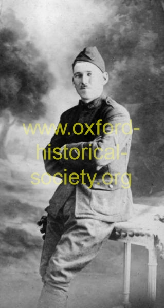

| 
170071136_2012-PF.jpg
John Hunihan, who was known to his friends as Jack, served in WW I. He first saw action in a skirmish on the Mexican border and then went to France. He received a medal for his service at Verdun (the longest battle of the war), with Troop A Calvary, Connecticut National Guard, Company D, 102nd Machine Gun Battalion. He was a resident of Stevenson and moved to Loughlin Road after the construction of the Stevenson dam. He was employed at the power plant and served as chairman of the Board of Education in Oxford. (Photo courtesy of Ann Hunihan Ludgewait.) (From Images of America, Oxford, by Dorothy A. DeBisschop) |
| Previous | Thumbnails | Next |